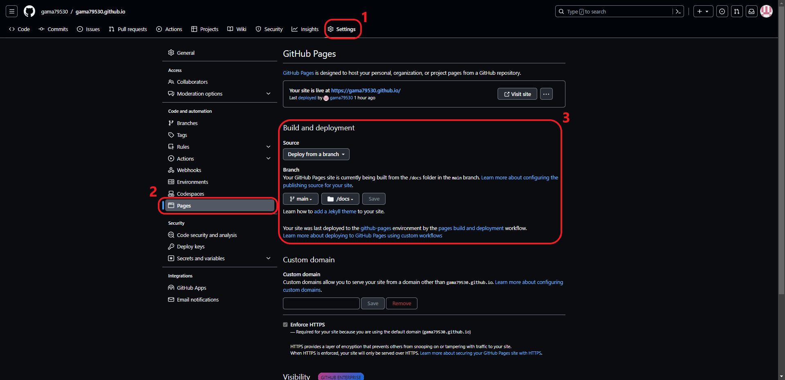

Building Foundation of Homepage#
Environment#
Ubuntu 22.04 LTS
Python 3.10.12
sphinx-book-theme
MyST-NB (MyST is included)
Installation#
Install python modules by the following commands
1pip install sphinx-book-theme
2pip install sphinx-copybutton
3pip install sphinx-togglebutton
4pip install myst-nb
5pip install jupyter
6pip install matplotlib
7pip install pandas
Note
You can create an isolated virtual environment and install the enviornment in this virtual environment.
1python3 -m venv venv
2source venv/bin/activate
Tip
You can also install these package by the “requirement.txt” in this repository
1 pip install -r requirement.txt
Configuration#
build sphinx architecture#
Executing the following command to initialize a Sphinx project
1sphinx-quickstart
2rm -rf source/index.rst
Caution
There are 5 configuration options in the building process
Separate source and build directories (y/n) [n]:
Project name:
Author name(s):
Project release []:
Project language [en]:
You can make your own configuration by except the 1st option. You should set the 1st option y. The other 4 options can be change by changing the setting option in the conf.py file.
set conf.py#
configure your existing Sphinx configuration
1 extensions = [
2 "sphinx_copybutton",
3 "sphinx_togglebutton",
4 "myst_nb",
5 "sphinx.ext.graphviz",
6 ]
configure html options
1 html_theme = 'sphinx_book_theme'
2
3 html_logo = "_static/{your logo}"
4 html_title = "{your title}"
5
6 html_theme_options = {
7 "use_download_button": True,
8 "repository_provider": "{your-provider}",
9 "repository_url": "https://{your-provider}/{org}/{repo}",
10 "use_source_button": True,
11 "use_edit_page_button": True,
12 "use_repository_button": True,
13 "use_issues_button": True,
14 }
Note
html_logo and html_title is used to customize your left sidebar. see also Customize your left sidebar
use_download_button allows you to download source of webpage. see also Add a download page button
The other options are related to the settings of remote repository. see also Buttons that link to source files
Tip
configuration of my homepage is:
skip html_logo
html_title = “Rein’s Homepage”
“repository_provider”: “github”,
“repository_url”: “https://github.com/gama79530/gama79530.github.io”,
configure myst options
1myst_enable_extensions = [
2 "amsmath",
3 "colon_fence",
4 "deflist",
5 "dollarmath",
6 "html_image",
7]
8
9myst_url_schemes = ("http", "https", "mailto")
10myst_number_code_blocks = ['c', 'c++', 'java', 'python', 'html', 'css', 'javascript', 'bash']
11myst_heading_anchors = 4
Note
You can see the function of myst_url_schemes from Set URL scheme defaults ‼️
You can see the functions of other settings from Global configuration
configure myst-nb options
1number_source_lines = True
2nb_number_source_lines = True
Note
You can see the functions of these 2 settings from Configuration
configure graphviz options
1graphviz_output_format = "svg"
Note
You can see the functions of graphviz_output_format from sphinx.ext.graphviz
Publish#
configure the repository on github#

cleaning all derivative files#
you can clear all derivative files by the following command.
1make clean
previewing while editing#
you can preview the homepage by opening build/html/index.html on a web browser after executing the following command.
1make preview
publish the result to the github pages#
executing the following command and push the files in docs directory to the github repository.
1make publish